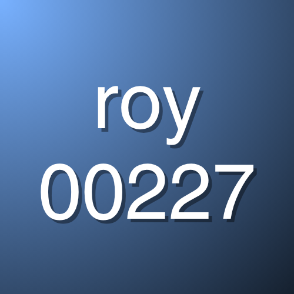
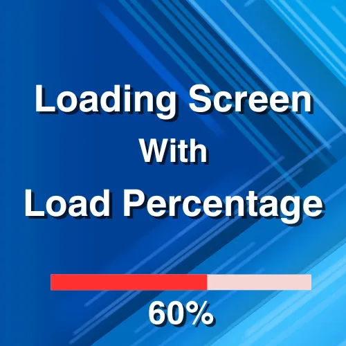
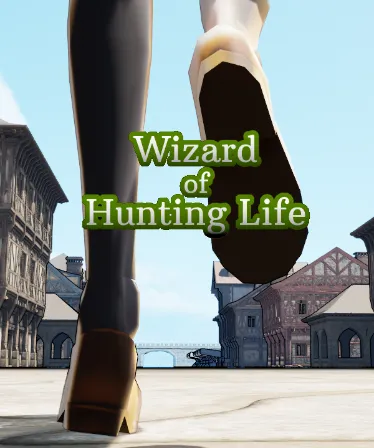

ポートフォリオ
自己紹介

Unreal Engineでのゲームおよびプラグインの開発・販売実績がございます。
Webサービスの開発・運用実績もあり、Unityについても調査やAIの活用により対応可能です。
ポートフォリオ以外の制作実績やスキルの詳細は、以下の職務経歴書をご参照ください。
制作実績
LiteGesture
マウスジェスチャー拡張機能「LiteGesture」の開発（自主制作）
詳細
右クリック（または左クリック）を押しながらマウスを動かすことで、ブラウザの戻る／進む・タブの複製／切替／復元などを実行できるChrome拡張機能を個人開発。Manifest V3に準拠し、JavaScriptのみで実装。
content scriptでマウス・ホイールイベントを検知しジェスチャーを判定するロジックと、service workerでタブ操作を実行する処理を実装。
ジェスチャーと実行アクションの割り当てを自由にカスタマイズできる設定画面、および軌跡をリアルタイム表示するオーバーレイUIも実装。日本語・英語のバイリンガルUIにも対応。
WispScribe
音声文字起こしWebサービス「WispScribe」の開発と運用（自主制作）
詳細
GeminiとChatGPTを活用しながら、Whisper APIとStripeを用いた音声ファイルの文字起こし＋決済機能付きのWebサービスを個人開発。
Python (Flask)を用いて構築し、音声・動画ファイルのアップロードから文字起こし、課金処理、結果表示まで一連の流れを実装。フロントエンドとバックエンドの連携も担当。
またPageSpeed Insightsでのスコアの改善を実施。


Wizard of Hunting Life
Unreal Engine4・5を使いPCゲーム「Wizard of Hunting Life」開発・リリース（自主制作）
詳細
3Dモデルやエフェクトはマーケットプレイスで購入し、システムはYoutubeのチュートリアル動画などを見ながら、ブループリントを使い制作。
戦闘、足音・エフェクト、敵AI、インベントリ、インタラクト、ダイアログ、ショップ、クエスト、オプションシステムなどの実装。
Steamで販売。